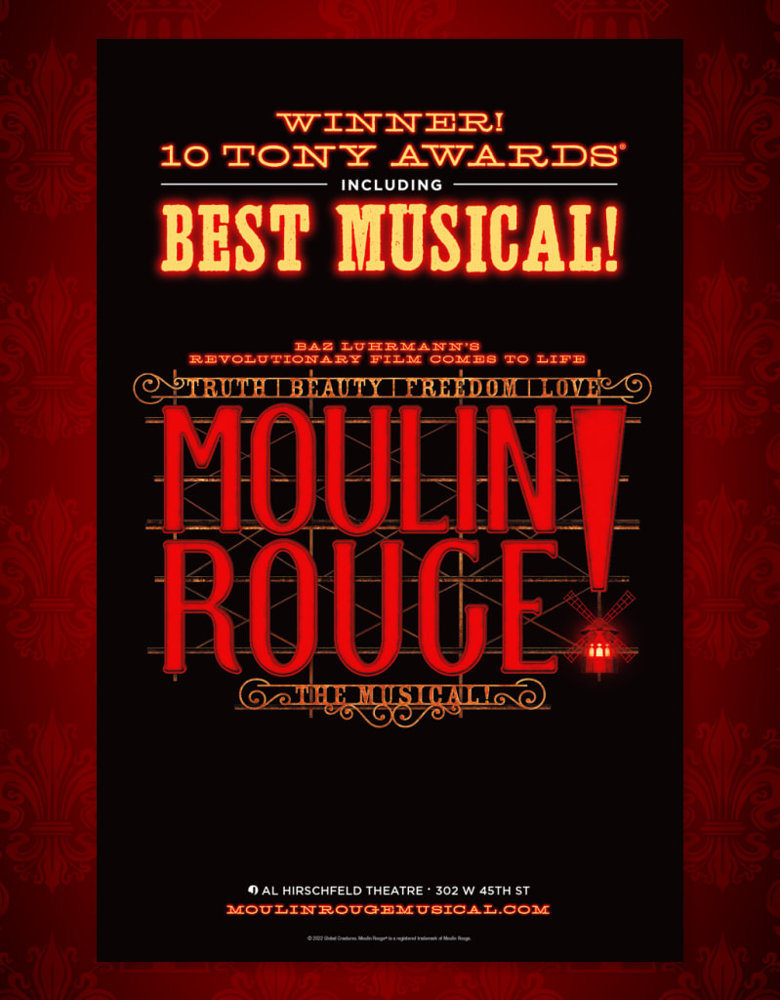
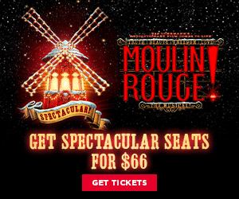
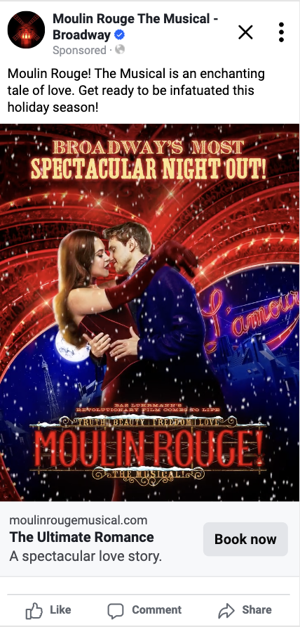
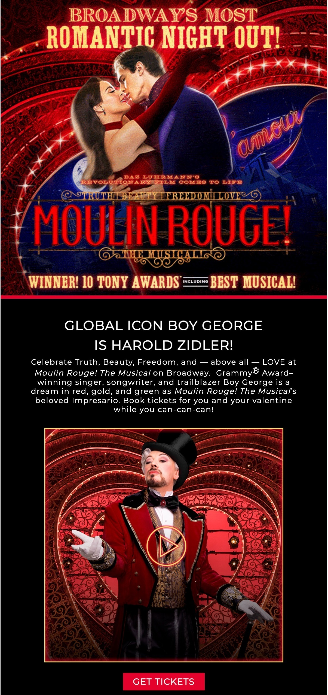
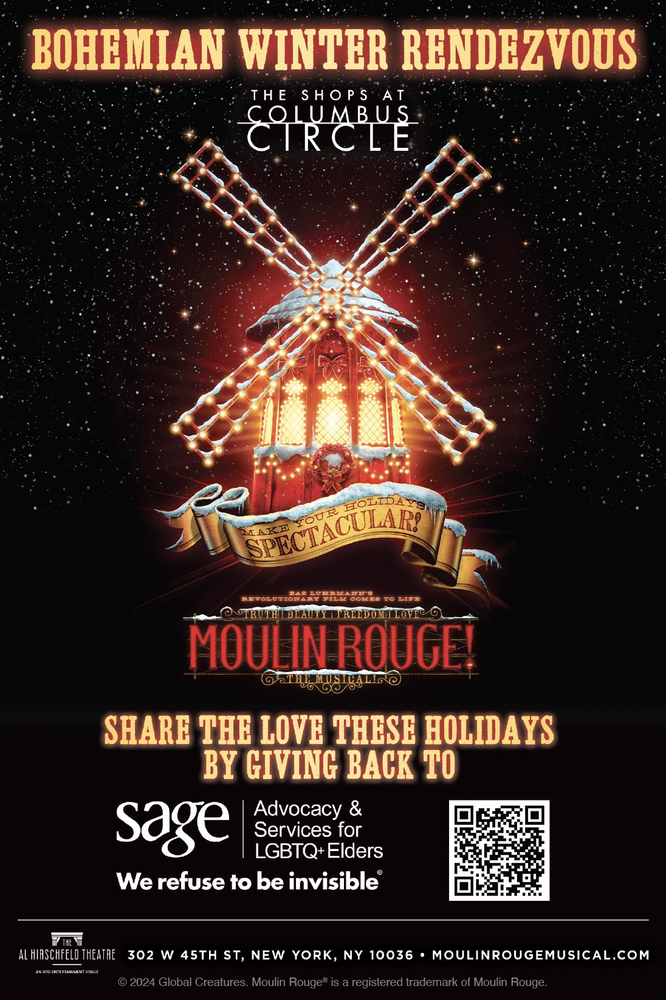

Moulin Rouge! The Musical is a Tony Award-winning Broadway show based on the 2001 Baz Luhrmann film.
As a Copywriter with the agency RPM, I worked on marketing and advertising assets for the show, which is currently in its fifth year at the Broadhurst Theatre.
I wrote and edited paid and organic social media copy, website copy, promotional event signage, flyers, video scripts, banner ads, and email marketing.
I also wrote and edited blog articles for the cabaret venue Moulin Rouge in Paris (the show's namesake), and helped to edit and adapt promotional trailers from international touring versions of the Broadway show.




